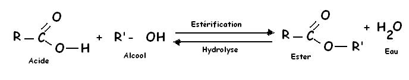
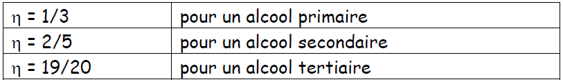

CHAPITRE III: Acides carboxyliques et leurs dérivés
Les acides carboxyliques possèdent le groupement fonctionnel COOH. Ce sont des acides faibles au sens de Bronsted. Ils peuvent être transformés en produits dérivés tels que : esters, anhydrides d'acides, halogénures d'acides, amides et les nitriles.
I - Les dérivés des acides carboxyliques
1. Les chlorures d'acyles
a. Obtention :
On peut les obtenir par l'action sur un acide de :
- SOCl2 ( chlorure de thionyle) :
R-COOH + SOCl2 → R-COOCl + SO2 + HCl
- PCl5 ( pentachlorure de phosphore) :
R-COOH + POCl5 → R-COOCl + POCl3 + HCl
- PCl3 (trichlorure de phosphore) :
R-COOH + POCl3 → R-COOCl + POCl + HCl
b. Nomenclature
Le nom d'un groupe acyle s'obtient en remplaçant la terminaison oïque de l'acide par la terminaison oyle.
Exemple:
CH3-COCl (chlorure d'éthanoyle)
CH3-CH2-COCl (chlorure de propanoyle).
Les chlorures d'acides possèdent une odeur irritante et sont souvent utilisés comme gaz lacrymogènes.
Les chlorures d'acides sont des composés sensibles en milieu aqueux, ils se décomposent pour redonner l'acide carboxylique correspondant :
2. Anhydrides d'acide :
a. Obtention :
Ils proviennent de la déshydratation intermoléculaire de deux molécules d'acide.
b. Nomenclature :
Le nom de l'anhydride est obtenu à partir des règles suivantes:
- Si les deux molécules d'acides déshydratés sont les mêmes (anhydrides symétriques), le mot acide est remplacé par anhydride.
Exemple: CH3-CO-O-CO-CH3: anhydride acétique (ou éthanoïque).
- Si les deux molécules d'acides déshydratés sont différentes (anhydrides mixtes), le nom de l'anhydride devient de la forme: anhydride alcanoïque alcanoïque, ou les deux derniers mots correspondant aux noms de la chaîne carbonée des 2 acides dont est issu l'anhydride, l'ordre étant l'ordre alphabétique.
Exemple : CH3-CO-O-CO-C2H5 : anhydride éthanoïque propanoïque.
II - Estérification et hydrolyse de l'ester
A. Estérification :
Les esters sont en général des liquides (à pression et température usuelles), assez volatils, à odeur fruitée et très peu solubles dans l'eau (contrairement aux acides et aux alcools dont ils dérivent).
1. Equation de la réaction
L'estérification est la réaction qui permet d'obtenir un ester. On peut, pour cela faire réagir un acide carboxylique R—COOH avec un alcool R'—OH. Cette réaction conduit à un ester R—COO—R' et de l'eau suivant l'équation:
R-COOH + R'-OH ⇌ R-COO-R' + H2O
La réaction en sens inverse entre l'ester et l'eau qui conduit à un alcool et à un acide carboxylique est appelée hydrolyse de l'ester et se produit simultanément.
2. Rendement d’estérification :
Le rendement de l'estérification est le rapport entre la quantité de matière d'ester effectivement obtenue nef et la quantité de matière d'ester que l'on obtiendrait si la réaction était totale nt.
B. Hydrolyse
1. Equation de la réaction
L'hydrolyse de l'ester entre l'ester et l'eau conduit à un alcool et à un acide carboxylique.
C'est la réaction inverse de l'estérification. Elle se produit simultanément avec l'estérification.
R-COO-R' + H2O ⇌ R-COOH + R'-OH
2. Rendement d’hydrolyse :
Le rendement d’hydrolyse est le rapport entre la quantité de matière d'acide effectivement obtenue nef et la quantité de matière d'acide que l'on obtiendrait si la réaction était totale nt.
C.Méthode expérimentale permettant de suivre l'évolution de la transformation Pour suivre l'évolution de ces transformations On mélange l'acide carboxylique et l'alcool et on dose à des dates t l'acide présent dans le milieu réactionnel.
La connaissance des quantités de matière d'acide initiale et à l'instant t permet de déterminer le taux d'avancement de la réaction.
Pour l'estérification, considérons l'exemple d'un mélange équimolaire d'acide éthanoïque et d'éthanol (alcool primaire). Le tableau d'avancement est:
D'après l'équation, le réactif limitant est celle dont la quantité initiale n0 est la plus faible.
xmax = n0 . Taux d'avancement : τ = x / xmax
Au bout d'un certain temps, x est constant, on a atteint l'état d'équilibre :
τéq ≈ 67 % (par ex)
A l'équilibre, les 2 réactions se compensent, leurs vitesses sont les mêmes.
On a donc x = n0 - n(ac). La quantité de matière d'acide à la date t est déterminée par dosage d'un échantillon du milieu réactionnel.
D. L'équilibre d'estérification-hydrolyse.
La réaction d'estérification et la réaction d'hydrolyse d'un ester sont deux réactions inverses l'une de l'autre Ces deux réactions se limitent mutuellement puisque l'ester produit par la réaction d'estérification est détruit en partie par la réaction d'hydrolyse.
Inversement, l'acide et l'alcool produits par la réaction d'hydrolyse sont consommés en partie par la réaction d'estérification.
Par conséquent, estérification et hydrolyse constituent une réaction réversible conduisant à un équilibre chimique où les quatre composés coexistent dans des proportions constantes (en fait il s'agit d'un équilibre dynamique durant lequel les deux réactions continuent d'avoir lieu mais avec des vitesses égales).
L'équation s'écrit :

+ Estérification
La constante d'équilibre K s'écrit:
+ Hydrolyse :
Ici, l'eau ne joue pas le rôle de solvant. Par conséquent, elle intervient dans l'expression de K.
E. Propriétés des réactions d'estérification et d'hydrolyse de l'ester Ces deux réactions sont:
- lentes.
- limitées par leur réaction inverse (l'estérification est limitée par l'hydrolyse de l'ester formé).
- athermiques. Elles ne nécessitent pas d'apport d'énergie thermique (chaleur) pour se produire et ne dégagent pas d'énergie thermique.
Ce qui ne signifie pas qu'un apport d'énergie thermique soit sans effet sur ces transformations comme nous le verrons plus loin.
F. Influence de certains facteurs sur les réactions d'estérification et d'hydrolyse des esters.
Ces facteurs peuvent modifier la vitesse de réaction ou la composition du milieu réactionnel à l'équilibre.
1. Influence de la température
a. Sur le taux d'avancement final (composition à l'équilibre)
Une modification de la température du milieu réactionnel est sans influence sur le taux d'avancement final. Cela est du au fait que ces réactions sont athermiques. Cela signifie aussi que la constante d'équilibre est indépendante de la température, contrairement à ce qui est observé pour la grande majorité des autres transformations.
b. Sur la cinétique des transformations
Qu'il s'agisse de l'estérification ou de l'hydrolyse d'un ester, une élévation de la température du milieu réactionnel augmente la vitesse de réaction. Cela signifie que l'équilibre est atteint plus rapidement (sans que la composition à l'équilibre soit modifiée).
2. Influence d'un catalyseur Les ions oxonium (H3O+ ou plus simplement H+) catalysent aussi bien la réaction d'estérification que la réaction inverse. Ils sont fréquemment introduits dans le milieu réactionnel par l'acide sulfurique. Ce catalyseur permet d'atteindre plus rapidement l'état d'équilibre sans changer la composition du milieu réactionnel à l'équilibre.
3. Influence de la concentration: (composition initiale)
Le taux d'avancement final (donc la composition du système à l'équilibre) dépend de la composition initiale du système. Le tableau de valeurs donné ci-contre, concernant un mélange d'acide éthanoïque et d'éthanol (alcool primaire) permet de comprendre cette influence. On observe que, par rapport au réactif limitant, plus la quantité de matière de l'autre réactif (en excès) est importante plus le taux d'avancement final est grand, donc plus il y a d'ester formé. La même remarque est valable (avec des valeurs numériques différentes) pour la réaction d'hydrolyse de l'ester.
4. Influence de la nature des réactifs Le rendement de l’estérification dépend très peu de la nature de l’acide carboxylique utilisé mis en jeu. En revanche, il dépend nettement de la classe de l’alcool utilisé. Pour des mélanges initiaux équimolaire en acide carboxylique et alcool, le rendement de synthèse de l’ester est de :
Pour des mélanges initiaux équimolaire en ester et eau, le rendement d’hydrolyse est de :

5. Déplacement de l’équilibre chimique
Pour déplacer l’équilibre chimique dans le sens d’un meilleur rendement en ester, on peut :
- Introduire l’un des réactifs en excès.
- Extraire l’ester ou l’eau au fur et à mesure de leur formation.
- Remplacer l’acide par l’un de ces dérivés : le chlorure d’acyle ou l’anhydride d’acide.
- Estérification d’un alcool par un dérivé d’acide
- Par un chlorure d’acyle : Les chlorures d’acyle réagissent avec les alcools de façon rapide, totale et très exothermique, pour donner un ester et du chlorure d’hydrogène
Exemple :
CH3COCl + CH3CH2CH2CH2OH → CH3COOCH2CH2CH2CH3 + HCl
- Par un anhydride d’acide : Les anhydrides d’acide sont moins réactifs que les chlorures d’acyle, mais nettement plus que les acides ; en effet, ils réagissent à température modérée (50°) avec les alcools pour former un ester et l’acide dont ils dérivent, suivant la réaction totale d’équation
III - Saponification
1. sur un ester
La saponification d’un ester résulte de l’action des ions hydroxyde OH- (base forte) sur cet ester ; elle donne un alcool et un ion carboxylate selon l’équationbilan :
1. sur un triester
Les corps gras liquides (huiles) ou solide (graisses) sont constitués essentiellement de triesters du glycol, aussi appelés triglycérides. L'hydrolyse basique ou saponification d'un triester du glycol donne du glycérol et trois ions carboxylates selon l’équation-bilan :